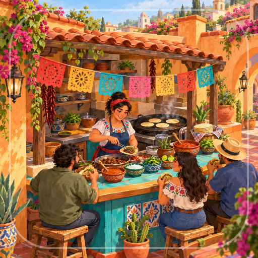

<- all projects

Casa Comal
PC
Volume
Live
Run a family taqueria lunch rush: build plates, keep the neighbors happy and grow Abuela's kitchen.
Grandma's comal is warm again. Help Lucía reopen the family taqueria in a sunny courtyard, cook for the neighbors and turn a handwritten recipe notebook into a kitchen the whole street loves. Across 60 lunch services, read three order tickets, pick tortilla, filling and salsa, cook the plate and serve the neighbor who ordered it. Discover 45 recipe combinations, serve six regulars who tip better the more often you feed them, plan the tortilla menu and buy stock before you open. Train your cook, hire a server and season the comal, and follow a five-chapter family story.